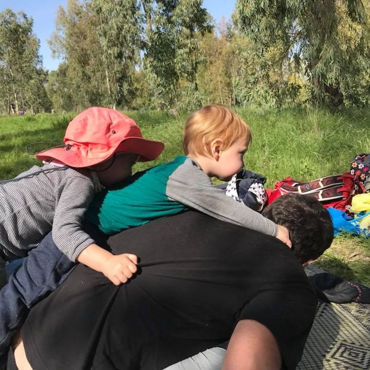

Alon Eden
Postdoctoral Researcher
Computer Science, Harvard University
alonarden@gmail.com
About
I am a Postdoctoral Researcher hosted by David Parkes and Yiling Chen at Harvard University. I work on blah blah blah and using that to blah.
I received my PhD from Tel Aviv University where I was advised by Amos Fiat and Michal Feldman.
Publications
Dynamic Pricing of Servers on Trees
Ilan Reuven Cohen, Alon Eden, Amos Fiat and Lukasz Jez
APPROX 2019.
Combinatorial Auctions with Interdependent Valuations: SOS to the Rescue
Alon Eden, Michal Feldman, Amos Fiat, Kira Goldner, Anna Karlin
EC 2019. Best Paper Award.
Vitae
Full CV in PDF.
Teaching
- TA in Algorithms, 2016-2017.
- TA in Discrete Math, 2014-2016.
- TA in Programming for Engineers, 2014.
My wife does awesome things in the field of sampling random things.